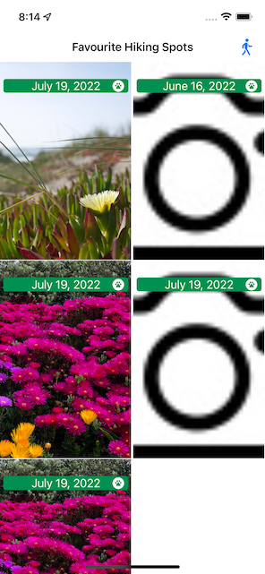
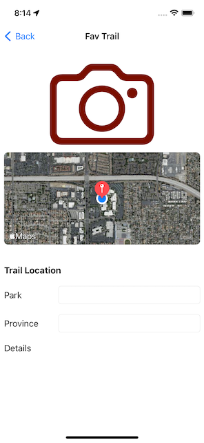
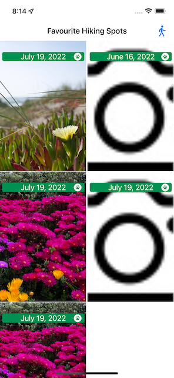
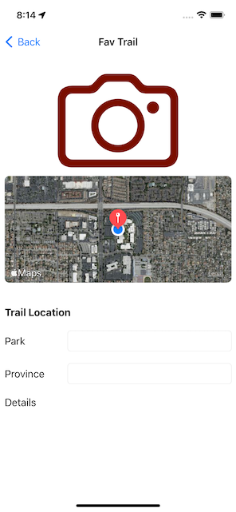

Hiking Spot Application
 



This application was made for my final project of iOS Development for the Winter 2022 semester. This application logs hiking spots and allows the user to save information regarding the hiking spot. Items like pictures, location, and text details such as name and notes. Created in UIKit.
This project implements various techniques such as:
- UICollectionView
- Diffable Data Source
- MapKit
- Camera
- Persisting Data using JSON
Source Code: GitHub